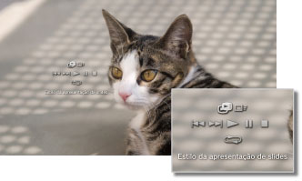

Foto > Vendo imagens como uma apresentação de slides
Vendo imagens como uma apresentação de slides
Cada imagem é exibida automaticamente em ordem. Após selecionar o ícone de uma pasta ou mídia que contém imagens e, então, pressionar o botão START, a apresentação de slides iniciará.
Dicas
- A apresentação de slides também pode ser iniciada no painel de controle ou no menu de opções de uma imagem.
- Se a apresentação de slides não puder ser iniciada pressionando o botão START, realize esta operação no painel de controle.
Utilizando o painel de controle da apresentação de slides
Após pressionar o botão  durante uma apresentação de slides, o painel de controle será exibido.
durante uma apresentação de slides, o painel de controle será exibido.

 |
Estilo da apresentação de slides | Selecione um dos cinco padrões de apresentação de slides. |
|---|---|---|
 |
Velocidade da apresentação de slides | Selecione uma das três velocidades de apresentação de slides: [Rápido] > [Normal] > [Lento]. |
 |
Anterior | Retorna para a imagem anterior. |
 |
Próximo | Avança para a próxima imagem. |
 |
Reproduzir | Inicia a apresentação de slides. |
 |
Pausar | Pausa a apresentação de slides. |
 |
Parar | Interrompe a apresentação de slides. |
 |
Repetir | Reproduz a apresentação de slides repetidamente. |
Dica
Quando (Estilo da apresentação de slides) for definido como [Álbum de fotos] ou [Álbum de fotos 2], utilize o controle direito do controle sem fio SIXAXIS™ para realizar funções, como aumentar ou reduzir o tamanho da imagem ou ajustar a velocidade da apresentação de slides.
Reproduzindo uma apresentação de slides enquanto reproduz música
Você pode reproduzir uma apresentação de slides e alguma música ao mesmo tempo.
1. |
Inicie a reprodução da música em |
|---|---|
2. |
Pressione o botão PS. |
3. |
Vá para |
 (Música).
(Música). (Foto), selecione as imagens ou a pasta que você deseja exibir na apresentação de slides e, depois, pressione o botão START.
(Foto), selecione as imagens ou a pasta que você deseja exibir na apresentação de slides e, depois, pressione o botão START.Dicas
- Ao pressionar o botão PS durante uma reprodução simultânea, o menu XMB™ será exibido e você poderá alterar a música ou as imagens.
- Para sair, você deve parar de reproduzir a apresentação de slides e a música separadamente. Após parar um ou outro, selecione a faixa ou a imagem sendo reproduzida e pare a reprodução.
- Você não pode reproduzir um Super Audio CD ao mesmo tempo que uma apresentação de slides.
- Se
 (Configurações) >
(Configurações) >  (Configurações de música) > [Frequência de saída] estiver definido como [44,1/88,2/176,4 kHz], você não poderá reproduzir o conteúdo de música ao mesmo tempo que uma apresentação de slides.
(Configurações de música) > [Frequência de saída] estiver definido como [44,1/88,2/176,4 kHz], você não poderá reproduzir o conteúdo de música ao mesmo tempo que uma apresentação de slides.
Atenção
Os Super Audio CDs não podem ser reproduzidos em alguns sistemas PS3™. Para obter detalhes, consulte [Tipos de discos reproduzíveis].